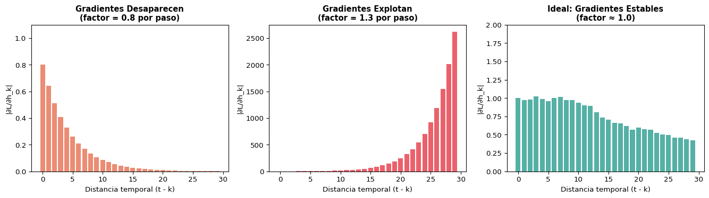
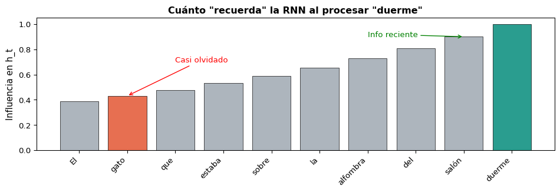

El estado oculto \(h_t\) actúa como una memoria comprimida de todo lo que la red ha visto hasta el paso \(t\). Al procesar “come”, \(h_3\) contiene información tanto de “el” como de “gato”.
¿Cuántos Parámetros Tiene una RNN?
Comparemos con un MLP equivalente para secuencias de longitud máxima \(T\):
MLP (una capa por posición)
Pesos: \(T \times (d \times D_h)\)
Crece linealmente con la longitud
No generaliza a longitudes no vistas
Ejemplo: \(T=100, d=300, D_h=256\)
→ 7,680,000 parámetros
RNN (pesos compartidos)
Pesos: \(d \times D_h + D_h \times D_h + D_h\)
Constante sin importar la longitud
Generaliza a cualquier \(T\)
Ejemplo: \(d=300, D_h=256\)
→ 142,592 parámetros
Compartir Pesos = Inductive Bias
Al usar los mismos pesos en cada paso, la RNN asume que las mismas reglas de transformación aplican sin importar la posición. Esto es como asumir invarianza temporal — similar a cómo las CNNs asumen invarianza espacial.
Bloque 3: Embeddings y Entrada a la RNN
De Palabras a Vectores: nn.Embedding
Las RNNs no reciben texto directamente — necesitan vectores. Usamos una capa de embedding:
\[x_t = \text{Embedding}(w_t) \in \mathbb{R}^d\]
import torchimport torch.nn as nn# Vocabulario de ejemplovocab = {'<pad>': 0, 'el': 1, 'gato': 2, 'come': 3, 'pescado': 4, 'perro': 5, 'duerme': 6}vocab_size =len(vocab)embed_dim =8# dimensión del embedding# Capa de embeddingembedding = nn.Embedding(num_embeddings=vocab_size, embedding_dim=embed_dim, padding_idx=0)# Convertir oración a índicessentence = ['el', 'gato', 'come', 'pescado']indices = torch.tensor([vocab[w] for w in sentence])# Obtener embeddingsvectors = embedding(indices)print(f"Índices: {indices}")print(f"Forma de embeddings: {vectors.shape} → (seq_len={len(sentence)}, embed_dim={embed_dim})")print(f"\nEmbedding de 'gato': {vectors[1].data.round(decimals=3)}")
Índices: tensor([1, 2, 3, 4])
Forma de embeddings: torch.Size([4, 8]) → (seq_len=4, embed_dim=8)
Embedding de 'gato': tensor([ 0.5100, 0.1480, 0.1320, 0.5010, -0.9860, 1.6430, 0.4690, -0.9210])
Embedding vs. One-Hot
One-hot: vector sparse de tamaño \(|V|\) (ej: 50,000). Embedding: vector denso de tamaño \(d\) (ej: 300). Los embeddings se aprenden durante el entrenamiento o se usan pre-entrenados (Word2Vec, GloVe).
Manejo de Longitud Variable: Padding
Las oraciones tienen diferente largo, pero los tensores necesitan forma rectangular.
# Batch de oraciones de diferente largosentences = [ ['el', 'gato', 'come', 'pescado'], # 4 tokens ['el', 'perro', 'duerme'], # 3 tokens]# Convertir a índices y hacer paddingdef to_indices(sent, vocab, max_len): ids = [vocab[w] for w in sent] ids += [vocab['<pad>']] * (max_len -len(ids)) # Rellenar con 0return idsmax_len =max(len(s) for s in sentences)batch = torch.tensor([to_indices(s, vocab, max_len) for s in sentences])lengths = torch.tensor([len(s) for s in sentences])print(f"Batch (con padding):\n{batch}")print(f"Longitudes reales: {lengths}")print(f"Forma: {batch.shape} → (batch_size={len(sentences)}, max_len={max_len})")
# RNN con 2 capasrnn_stacked = nn.RNN(input_size=8, hidden_size=16, num_layers=2, batch_first=True)x = torch.randn(2, 5, 8)output, h_n = rnn_stacked(x)print(f"Salida: {output.shape} → salida de la ÚLTIMA capa solamente")print(f"h_n: {h_n.shape} → h final de CADA capa (2 capas × 2 batches × 16 hidden)")
Salida: torch.Size([2, 5, 16]) → salida de la ÚLTIMA capa solamente
h_n: torch.Size([2, 2, 16]) → h final de CADA capa (2 capas × 2 batches × 16 hidden)
Si \(t - k\) es grande (dependencia lejana), este producto tiene muchos factores.
Consecuencias
Si \(\|W_{hh}\| < 1\): gradientes → 0 (desaparecen)
Si \(\|W_{hh}\| > 1\): gradientes → ∞ (explotan)
Solución para explosión: gradient clipping
# Gradient clipping en PyTorchtorch.nn.utils.clip_grad_norm_( model.parameters(), max_norm=1.0)
El Problema del Gradiente que Desaparece
Code
import numpy as npimport matplotlib.pyplot as plt# Simular la magnitud del gradiente a través del tiemponp.random.seed(42)T =30# Caso 1: gradientes que desaparecen (norma espectral < 1)grad_vanish = []g =1.0for t inrange(T): g *=0.8# factor < 1 grad_vanish.append(g)# Caso 2: gradientes que explotan (norma espectral > 1)grad_explode = []g =1.0for t inrange(T): g *=1.3# factor > 1 grad_explode.append(g)# Caso 3: ideal (norma ≈ 1)grad_ideal = []g =1.0for t inrange(T): g *= (0.98+0.04* np.random.randn()) grad_ideal.append(abs(g))fig, axes = plt.subplots(1, 3, figsize=(14, 4))axes[0].bar(range(T), grad_vanish, color='#e76f51', alpha=0.8)axes[0].set_title('Gradientes Desaparecen\n(factor = 0.8 por paso)', fontweight='bold', fontsize=11)axes[0].set_xlabel('Distancia temporal (t - k)')axes[0].set_ylabel('|∂L/∂h_k|')axes[0].set_ylim(0, 1.1)axes[1].bar(range(T), grad_explode, color='#e63946', alpha=0.8)axes[1].set_title('Gradientes Explotan\n(factor = 1.3 por paso)', fontweight='bold', fontsize=11)axes[1].set_xlabel('Distancia temporal (t - k)')axes[1].set_ylabel('|∂L/∂h_k|')axes[2].bar(range(T), grad_ideal, color='#2a9d8f', alpha=0.8)axes[2].set_title('Ideal: Gradientes Estables\n(factor ≈ 1.0)', fontweight='bold', fontsize=11)axes[2].set_xlabel('Distancia temporal (t - k)')axes[2].set_ylabel('|∂L/∂h_k|')axes[2].set_ylim(0, 2)plt.tight_layout()plt.show()

Memoria a Corto Plazo de las RNNs
El problema en NLP
“El gato que estaba sobre la alfombra roja del salón que compramos el verano pasado en la tienda del centro duerme.”
¿El verbo “duerme” concuerda con “gato” (20+ tokens atrás)?
La RNN simple no puede conectar estos tokens lejanos porque el gradiente se desvanece durante BPTT.
Lo que la RNN “recuerda”
Code
import matplotlib.pyplot as pltimport numpy as npwords = ['El', 'gato', 'que', 'estaba', 'sobre', 'la', 'alfombra', 'del', 'salón', 'duerme']n =len(words)memory = np.array([0.9**i for i inrange(n)])[::-1]fig, ax = plt.subplots(figsize=(10, 3.5))colors = ['#e76f51'if w in ['gato'] else'#2a9d8f'if w =='duerme'else'#adb5bd'for w in words]bars = ax.bar(range(n), memory, color=colors, edgecolor='black', linewidth=0.5)ax.set_xticks(range(n))ax.set_xticklabels(words, rotation=45, ha='right', fontsize=10)ax.set_ylabel('Influencia en h_t', fontsize=11)ax.set_title('Cuánto "recuerda" la RNN al procesar "duerme"', fontsize=12, fontweight='bold')ax.annotate('Casi olvidado', xy=(1, memory[1]), xytext=(2, 0.7), arrowprops=dict(arrowstyle='->', color='red'), fontsize=10, color='red')ax.annotate('Info reciente', xy=(8, memory[8]), xytext=(6, 0.9), arrowprops=dict(arrowstyle='->', color='green'), fontsize=10, color='green')plt.tight_layout()plt.show()

La RNN Simple tiene “Memoria a Corto Plazo”
En la práctica, las RNN simples solo capturan dependencias de ~10-20 tokens. Para dependencias más largas necesitamos arquitecturas especiales: LSTM y GRU (siguiente sesión).
Resumen
Lo Que Aprendimos Hoy
Concepto
Los MLPs no capturan orden ni longitud variable
Las RNNs procesan secuencias con pesos compartidos
El estado oculto \(h_t\) es una memoria comprimida